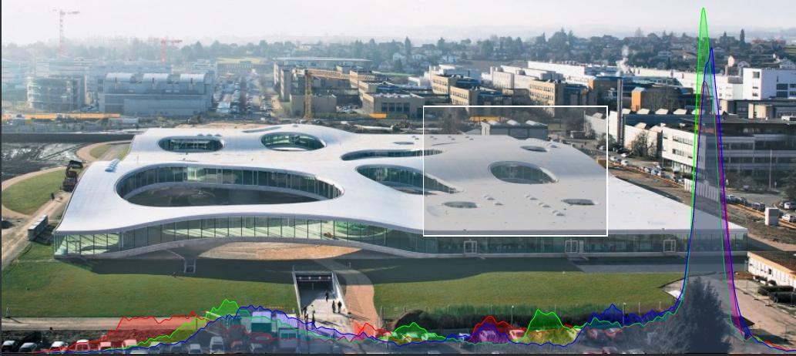

This lab is about interactive plots and color spaces. This time, we propose you to make an animated color histogram. If you used Gimp, Lightroom or Photoshop, you saw them there. Read more about color histograms here.
The end result swill look like this:

Let’s consider the parts of this visualization:
Please look at the CSS in exercise/style.css - the rules for figure and .overlay put the SVG on top of the image (the SVG has the class .overlay). The effect is achieved using position: absolute.
First let us setup the brush (area selection tool). You can example usage of a 2D brush here.
First we need to create a brush object and register the event handler. The function is called when the user finishes changing the selected area. If you prefer to update while the user is moving the area, you can listen to the "brush" event instead of "end".
var brush = d3.brush().on("end", () => {
// this is called when the selection is changed
});The selected area is specified in d3.event.selection as [[x_min, y_min], [x_max, y_max]] or null if nothing is selected.
We also need to create a visual representation of the brush (the white edged rectangle):
svg.append("g")
.attr("class", "brush")
.call(brush);Create the brush and register the selection event. Print the coordinates of the selected area in the console.
Now that we have the selected area, we can use the provided method getImageHistogramOfArea(x_left, y_top, width, height) to calculate the histograms. Try printing the resulting data.
Now we shall plot the histogram data.
Create the plots for the red, green and blue channels. To draw curves use the line or area generators (given an array of values, they generate the textual representation to be used by the SVG path’s d attribute - see examples under those links). You can use the provided red, green and blue CSS classes to set the colors of the curves.
As usual with d3.js plots, use scales to convert from data values to plot coordinates. The viewBox of the plot is [0, 0, 900, 400], use the whole area.
You can try plotting some dummy data before you connect it to the selection mechanism - its easier to develop the parts separately.
The Y scale should adapt to the calculated histograms: the upper value of its domain should equal to the maximum value in the histograms. You can call domain again on an existing scale object to change its input range.
If you are getting the error on Chrome:
The canvas has been tainted by cross-origin data.localhost:8000 in the browser: cd exercise_dir
python3 -m http.server